echo chamber
This is a digital arena for sound and vision. Every echo is a decision. Step inside, hear the feedback, feel the signal.
this code is a mess, this archive is a mess.
lolo&sosaku
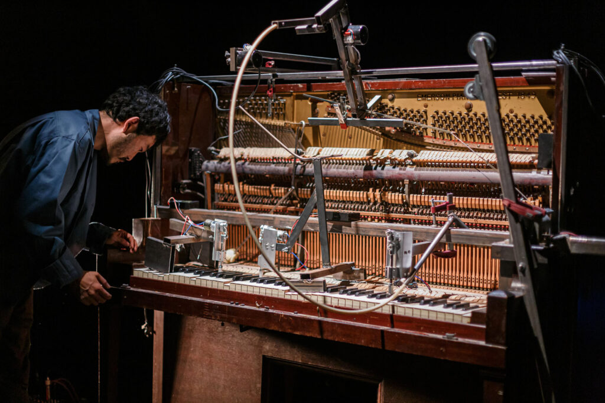
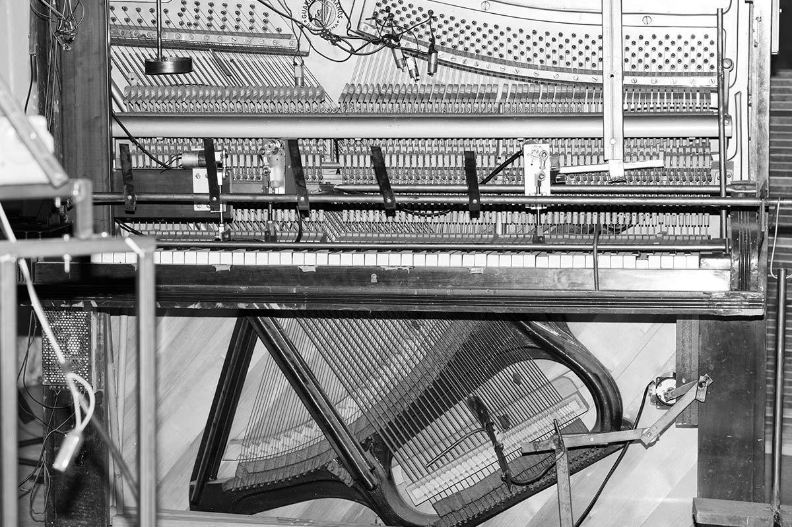
in space we believe
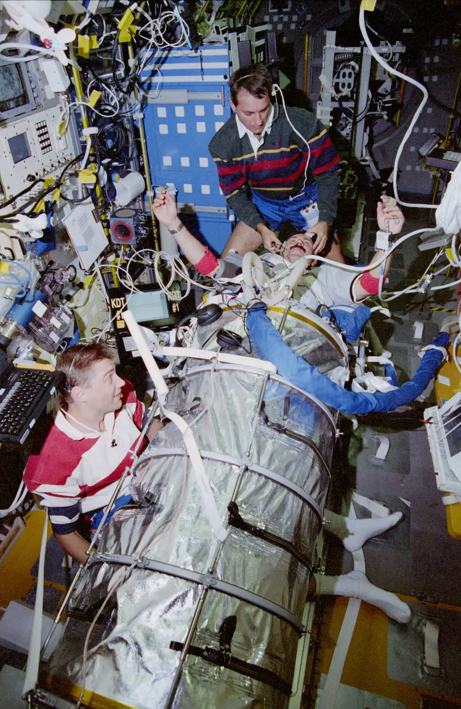
Praat Software.
Click here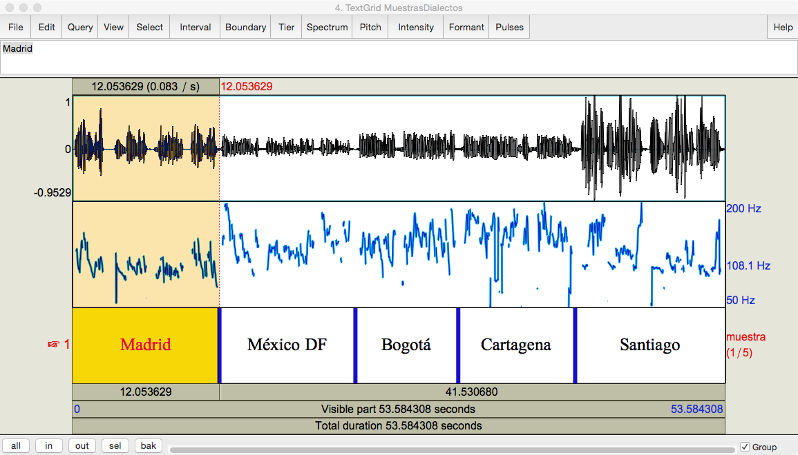
Peter Ablinger
Cantos A La Virgen aspe Miradla
bees
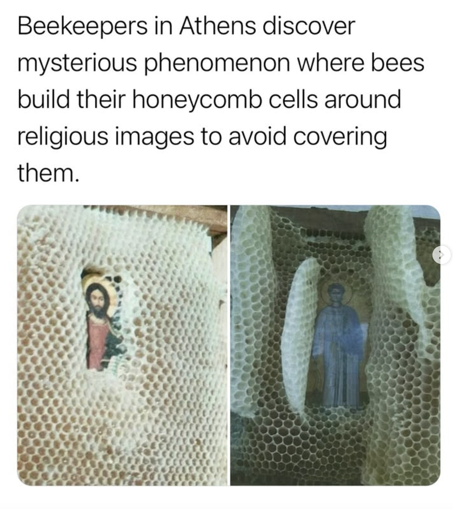
Cosmological simulation of universe evolution
el jardín de la neurología.
Javier de Felipee
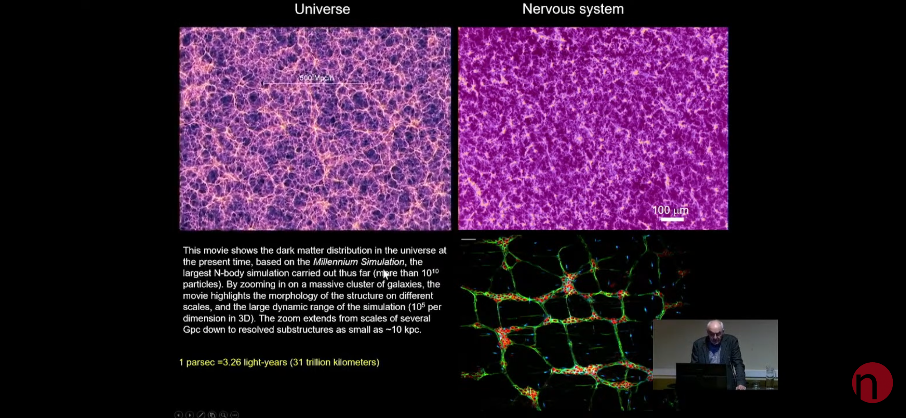
can't help myself.
Sung Yuan Peng Yu
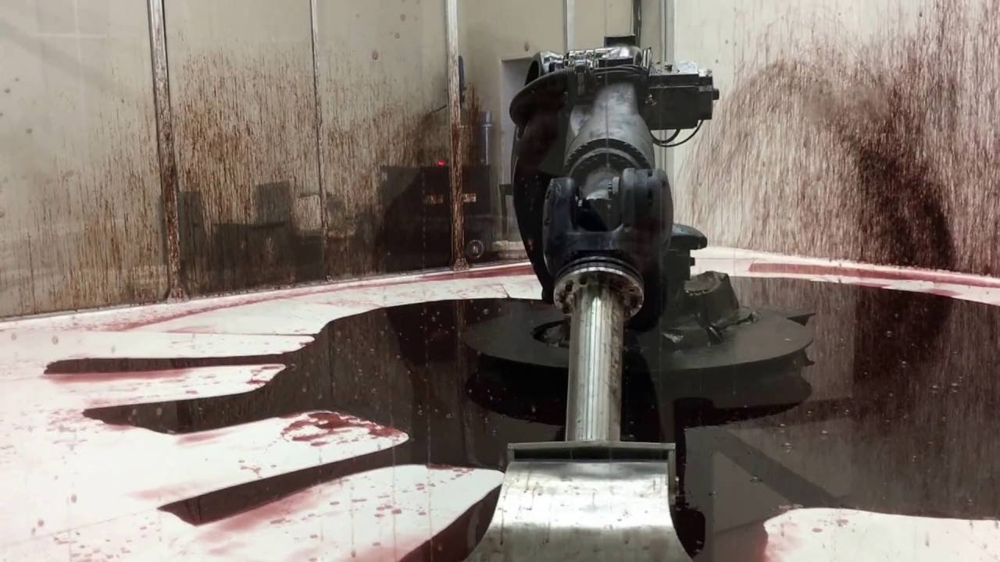
The Cosmic Clock.
manuscript from thee Benedictine Abbey of saint-Beertin

TemploOS.
Terry Davis
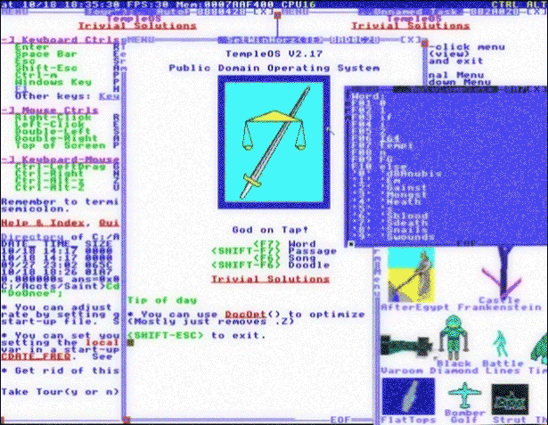
caribe mix
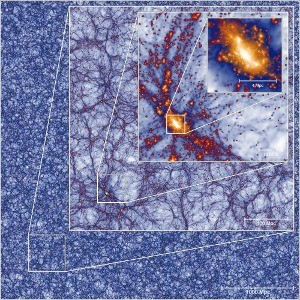
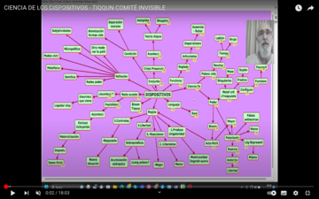
LINKS
My Boyfriend Came BAck From the War
Olia Lialina
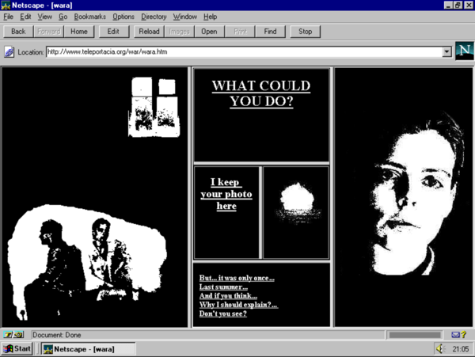
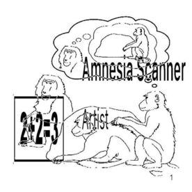
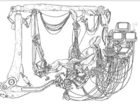
what do you want from me?
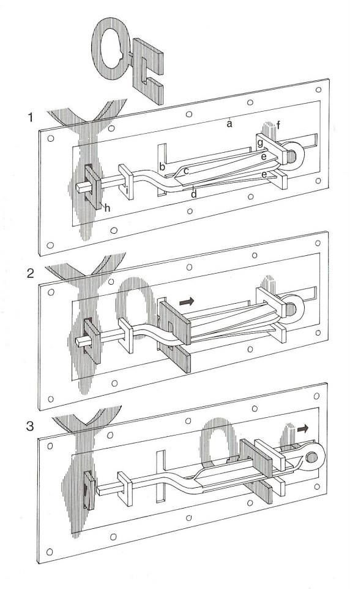